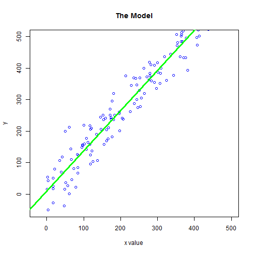

- Students can easily play with the data parameters
- App provides insight through immediate visualization
- Linear model and fit estimate (R-squared) feedback
- Intuitive understanding of linear model
Alan Luscombe
Data Products course presentation
A linear model based on some pseudo-random data, generated in R

Generating linear data.
y = a + b * x + e
y - a linear transformation of the x data with some random error added
a - is the intercept
b - is the slope
x - uniformly distributed random data
e - is normally distributed with standard deviation set by the user.
Note that student can change a, b, and e dynamically using sliders.
A linear model is fitted to the generated data and plotted over the generated points. The R-squared value for the model is displayed to the user.
Thanks for your attention